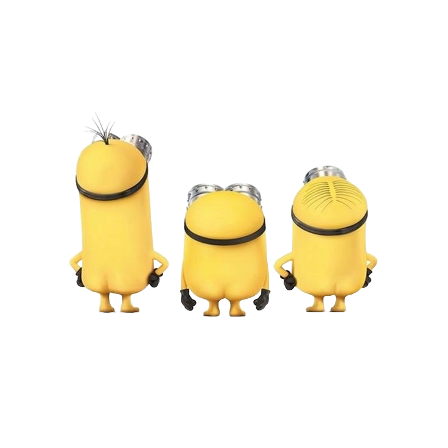

The Minions are small, yellow, cylindrical, creatures who have one or two eyes. They are impulsive creaturs with little self-control, but with wide-eye wonder and odd innocence that endears them to viewers and makes them relatable. They can be pesky when they are doing weird interactions with other people, animals, or objects.
what and who are these minions

meet
BOB
Bob is a short and bald minion with multi-colored eyes (green and brown). He often carries around a Teddy Bear that he owns called Tim which is brown with yellow buttoned eyes. Bob is a minion who is more childish than most. He is described as a "Little Brother" who finds love in anything and everything. He also enjoys bedtime stories and playing with his Teddy Bear, Tim.
meet
KEVIN
Kevin is a tall two-eyed minion with sprout cut hair and is usually seen wearing his golf apparel. Kevin loves to make fun of and tease people or Minions, shown when he made fun of Jerry and teases him for being coward. He loves playing golf.


meet
KEVIN
Stuart is a one-eyed short Minion with combed hair. Stuart is playful and funny. He is skillful at video games like Dave. He can also be the most sincere and innocent out of all minions.
